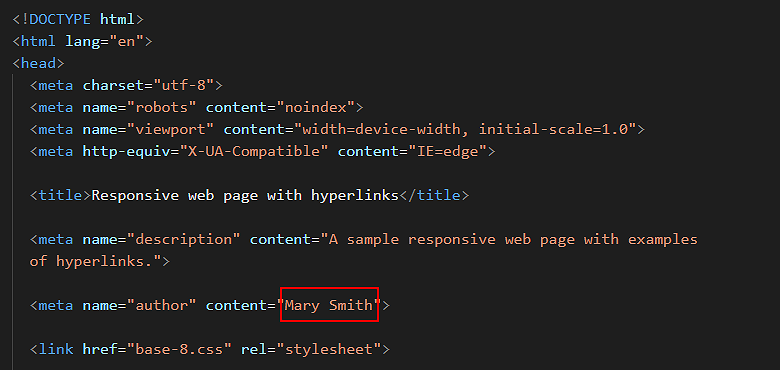

The following are the exercises and projects you need to complete for the Diploma in Web Design course. There are also links to the final HTML and CSS files created in each exercise and project.
Feb 19th
In this session you will learn how to create a website on GitHub, install Google Chrome and Mozilla Firefox Developer Edition, and install and customise Microsoft Visual Studio Code text editor.
Feb 26th
In this session you will learn how to link a web page (HTML file) to a stylesheet (CSS file), save an existing web page with a new name, create a new, blank stylesheet with your text editor, reset default web browser styles in a stylesheet, add a comment in a stylesheet, create heading and paragraph styles in a stylesheet, and create and use a Google Analytics account and tracking code for your website.
Marking Up with HTMLFINISHED HTML FILE
https://ibat-web-dev.github.io/base-0.htmlFINISHED HTML & CSS FILES
https://ibat-web-dev.github.io/base-1.htmlhttps://ibat-web-dev.github.io/base-1.css
March 4th
In this session you learn how to add media queries to a CSS file for the 768px breakpoint, use a media query to create responsive left and right padding on a web page, and to create responsive inter-line and margin spacing for headings and text paragraphs.
Also in this session you will learn the concept of 'fluid typography' in web design, and apply Mike Riethmuller's fluid typography equation to the CSS styles that control the headings, paragraphs and other text elements in a web page.
Responsive Web Design: Media QueriesFINISHED HTML & CSS FILES
https://ibat-web-dev.github.io/base-2.htmlhttps://ibat-web-dev.github.io/base-2.css
March 11th
Responsive Web Design: Fluid Typography
FINISHED HTML & CSS FILES
https://ibat-web-dev.github.io/base-3.htmlhttps://ibat-web-dev.github.io/base-3.css
March 18th
Lists and Bullets
FINISHED HTML & CSS FILES
https://ibat-web-dev.github.io/base-4.htmlhttps://ibat-web-dev.github.io/base-4.css
March 11th
In this session you learn how to select font families, weights and styles from Google Fonts, add a Google Fonts stylesheet to the <head> of an HTML file, and add a Google Fonts name to the font-family property of a CSS file.
Also in this session you will understand the concept of the ‘box model’ in styling and positioning elements on a web page, and apply properties and values in CSS for three components of the box model: padding, borders and margins.
Working with Google FontsFINISHED HTML & CSS FILES
https://ibat-web-dev.github.io/base-5.htmlhttps://ibat-web-dev.github.io/base-5.css
FINISHED HTML & CSS FILES
https://ibat-web-dev.github.io/base-6.htmlhttps://ibat-web-dev.github.io/base-6.css
March 18th
In this session you learn the three main colour systems used in web design: colour names, RGB values and hex codes. You will use web browser DevTools to identify the colours of selected web page elements. And you will apply the CSS properties of color, background-color and border-color to web page elements.
Also in this session you will learn about hyperlinks, apply CSS rules to the four hyperlink states (link, visited, hover and active), style hyperlinks as buttons with solid colour or transparent backgrounds, apply soft corners and rounded edges to hyperlinks styled as buttons, and add Font Awesome icons to hyperlinks styled as buttons.
Colours and Web DesignFINISHED HTML & CSS FILES
https://ibat-web-dev.github.io/base-7.htmlhttps://ibat-web-dev.github.io/base-7.css
FINISHED HTML & CSS FILES
https://ibat-web-dev.github.io/base-8.htmlhttps://ibat-web-dev.github.io/base-8.css
March 25th
In this session you will create a responsive web page that features three levels of heading, images, background colours and highlighted elements. You will also create a responsive web page that contains a number of hero blocks with various fonts and alignments, and with a range of background colours, gradients and images.
Project 1: How to set up a website
FINISHED HTML FILE
https://ibat-web-dev.github.io/portfolio/how-to-set-up-a-website/basic/index.htmlProject 2: Hero Blocks Showcase
FINISHED HTML FILE
https://ibat-web-dev.github.io/portfolio/hero/basic/index.htmlApril 1st
In this session will you will create two, one-page responsive websites that showcase multi-column layouts created with CSS flexbox.
FINISHED HTML FILE
https://ibat-web-dev.github.io/portfolio/smoothies/basic/index.htmlFINISHED HTML FILE
https://ibat-web-dev.github.io/portfolio/software/basic/index.htmlApril 8th
In this session will you will create two, three-page responsive websites that showcase multi-column layouts created with CSS flexbox.
FINISHED HTML FILE
https://ibat-web-dev.github.io/portfolio/travel/basic/index.htmlFINISHED HTML FILE
https://ibat-web-dev.github.io/portfolio/web-agency/basic/index.htmlApril 15th
In this session will use template content to add interactive forms and footer sections to the sample web pages you have already created.
FINISHED HTML FILE
https://ibat-web-dev.github.io/portfolio/smoothies/form/index.htmlFINISHED HTML FILE
https://ibat-web-dev.github.io/portfolio/software/form/index.htmlFINISHED HTML FILE
https://ibat-web-dev.github.io/portfolio/travel/form/contact-us.htmlFINISHED HTML FILE
https://ibat-web-dev.github.io/portfolio/web-agency/form/contact.htmlProject 1: How to set up a website
FINISHED HTML FILES
https://ibat-web-dev.github.io/portfolio/how-to-set-up-a-website/footer/index.html-or-
https://ibat-web-dev.github.io/portfolio/how-to-set-up-a-website/footer-two/index.html
Project 2: Hero Blocks Showcase
FINISHED HTML FILES
https://ibat-web-dev.github.io/portfolio/hero/footer/index.html-or-
https://ibat-web-dev.github.io/portfolio/hero/footer-two/index.html
FINISHED HTML FILES
https://ibat-web-dev.github.io/portfolio/smoothies/footer/index.html-or-
https://ibat-web-dev.github.io/portfolio/smoothies/footer-two/index.html
FINISHED HTML FILES
https://ibat-web-dev.github.io/portfolio/software/footer/index.html-or-
https://ibat-web-dev.github.io/portfolio/software/footer-two/index.html
FINISHED HTML FILES
https://ibat-web-dev.github.io/portfolio/travel/footer/index.html-or-
https://ibat-web-dev.github.io/portfolio/travel/footer-two/index.html
FINISHED HTML FILES
https://ibat-web-dev.github.io/portfolio/web-agency/footer/index.html-or-
https://ibat-web-dev.github.io/portfolio/web-agency/footer-two/index.html
April 22nd
In this session will use template content to add desktop and mobile menus to the sample web pages you have already created.
FINISHED HTML FILES
https://ibat-web-dev.github.io/portfolio/smoothies/menus/index.htmlFINISHED HTML FILES
https://ibat-web-dev.github.io/portfolio/software/menus/index.htmlFINISHED HTML FILES
https://ibat-web-dev.github.io/portfolio/travel/menus/index.htmlFINISHED HTML FILES
https://ibat-web-dev.github.io/portfolio/web-agency/menus/index.htmlApril 29th
In this session you will create your personal website, based on one of three sample website templates. Each of these website templates has four web pages: a Home page, a Privacy page, a Portfolio page and a Contact page.
SAMPLE FINISHED WEBSITE: 1
https://ibat-web-dev.github.io/index-1.htmlSAMPLE FINISHED WEBSITE: 2
https://ibat-web-dev.github.io/index-2.htmlSAMPLE FINISHED WEBSITE: 3
https://ibat-web-dev.github.io/index-3.html
Update the meta tags
In the <head> section of every HTML file, within the <author> meta tag, you can see the name 'Mary Smith.'
Replace this with your own name.

Update the Google Analytics ID
Near the top of every HTML file, just before the closing </head> tag, you can see a sample Google Analytics Tracking Code.

Each Google Tracking Code has a unique ID in its first and last line. Replace the sample Google Tracking ID with your own Google Tracking ID. The instructions for viewing your website’s unique Google Tracking ID are here.
Validate your HTML and CSS files
Before uploading your HTML and CSS files to GitHub, check them for any errors with the official https://validator.w3.org and https://jigsaw.w3.org/css-validator online validators.
With the CSS validator, ignore any errors such as those below that are related to the fluid typography equation.

Return to Contents.